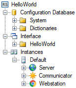

Conceptos básicos de la configuración
Creación de un proyecto
La configuración de Rapid SCADA se realiza en base a proyectos. Un proyecto es un conjunto de archivos de varios formatos que están almacenados en el directorio del proyecto. Para crear y editar los proyectos utilice la aplicación Administrator (Administrador). Al iniciarla, se abre la Start Page (Página de inicio) que contiene los botones para crear un proyecto nuevo o abrir uno existente (refiérase a la Figura 1).

Figura 1. Página de inicio

Figura 2. Formulario de creación de un proyecto
Preste atención al campo Template (Plantilla) del formulario (refiérase a la Figura 2). La plantilla define la configuración inicial que se añade al proyecto. Es posible usar otro proyecto ya existente como plantilla.
Estructura de un proyecto
La configuración de Rapid SCADA se muestra en el explorador de proyectos, ubicado en la parte izquierda de la ventana principal del Administrador. El proyecto consta de las siguientes partes principales (refiérase a la Figura 3):
- La base de datos de configuración es una descripción estructurada de todo el sistema automatizado. La base de datos de configuración define al sistema en general, mientras que los ajustes detallados se refieren a las aplicaciones correspondientes de Rapid SCADA.
- Interface (Interface). Esta sección de la configuración contiene los archivos de vistas y los archivos de configuración de informes. Son ejemplos de vistas: los esquemas, las tablas, los mapas y los paneles de instrumentos.
- Configuración de la aplicación Server (Servidor).
- Configuración de la aplicación Communicator (Comunicador).
- Configuración de la aplicación Webstation (Estación Web). Es conveniente editar la configuración de Webstation a través de la interfaz web y luego descargarla descargarlos en el proyecto.

Figura 3. Estructura de un proyecto
Una instancia es un ordenador en el que Rapid SCADA está instalado. Un determinado proyecto puede incluir múltiples instancias de Rapid SCADA que intercambian datos. La aplicación Administrator puede conectarse con los servidores remotos para descargar y subir la configuración, de forma que es posible configurar Rapid SCADA usando una estación de trabajo.
Secuencia general de configuración
Inicialmente, al trabajar con Rapid SCADA se recomienda seguir la secuencia general de configuración que se describe a continuación. Más adelante, con mayor experiencia y mejor comprensión de las dependencias entre las aplicaciones, se podrá cambiar la secuencia para aumentar la eficiencia.
- Cree un proyecto nuevo o abra uno existente.
- Añada los objetos, las líneas de comunicación y los dispositivos en la base de datos de configuración. Para crear las líneas de comunicación y los dispositivos se recomienda usar los asistentes que se abren usando los botones
 y
y  ubicados en la barra de herramientas de Administrator.
ubicados en la barra de herramientas de Administrator.
- Verifique que las líneas de comunicación y los dispositivos añadidos estén presentes en la configuración del Communicator. Si es necesario, impórtelos seleccionando el elemento del menú Import (Importar) del menú contextual del nodo Communication lines (Líneas de comunicación) del explorador de proyectos.
- Configure la comunicación con los dispositivos en el Comunicator.
- Cree los canales de entrada y salida en la Configuration Database (base de datos de configuración). Se recomienda usar el asistente que se abre usando el botón
 .
.
- Cree las vistas vistas y especifíquelas en la tabla Interface (Interfaz) de la base de datos de configuración.
- Suba el proyecto al servidor usando el botón
 (Upload Configuration).
(Upload Configuration).